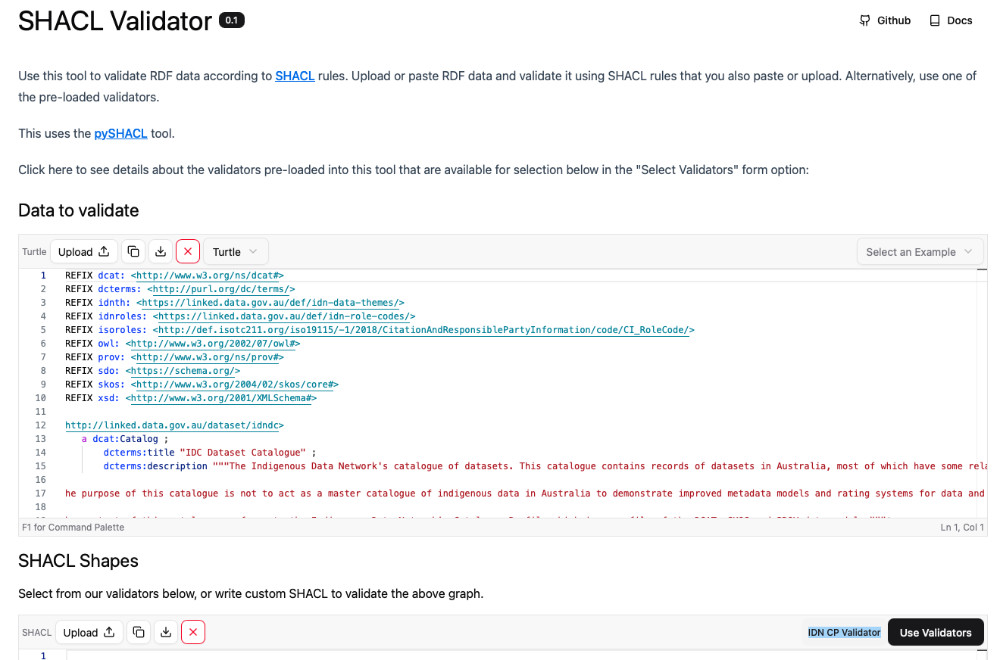

-
Metadata Details
- See the Specification Document
-
All Profile Resources
- See the Profile Resources
IDN Catalogue Profile - Guidance
This is a guide to assist you with using the Indigenous Data Network's Catalogue Profile.
How do I...
- Understand the Catalogue Profile, at a high level?
- Create metadata according to the profile?
- Indicate something in a catalogue is Indigenous?
- Calculate FAIR or CARE scores?
- Improve my catalogue's FAIR or CARE scores?
- Express my catalogue's metadata according to the profile but in other formats?
- Validate my metadata?
- See some examples?
1. Understand the Catalogue Profile, at a high level
What
Metadata is used to describe things in catalogues, so they can be discovered, understood and used.
This "catalogue profile" is a specialised form of a common catalogue data model - DCAT, the Data Catalog Vocabulary - that is tuned to support:
- indicating the Indigenousness, or otherwise, of data
- describing governance arrangement for data
Use of metadata according to this Profile should allow users to tell how catalogued resources relate to Indigenous people and what arrangements are in place for sensitive governance of them.
No amount of metadata can substitute for actual governance arrangements, so use of this Catalogue Profile is limited to the representation of such arrangements only.
How
The metadata elements that this Profile promotes to do these things are not new - they are all existing and normal parts of DCAT - but specific arrangements of their use and reference data supplied for use with them is new.
This Profile suggests three main things you can do to address the dot points above for a resource:
- Record basic, standardised, metadata for it
- Represent, in detail, relations people and organisations have to it
- Indicate any policies that you have that affect it
These three approaches are detailed as "patterns" in the Specification Document's Patterns Section.
2. Create metadata according to the profile
You will need to produce metadata in a specific format - RDF - to meet the requirements of this Profile, however, there are tools to assist with this.
You can:
- Use the Metadata Entry Tool
- Type out RDF data, manually
- Use Software
2.1 Use the Metadata Entry Tool
This is our recommended starting point
The Indigenous Data Network maintains an online, interactive, tool that you can use to create metadata according to the IDN Catalogue Profile.
The tool contains examples you can load, video tutorials and displays the metadata it creates as you fill in form fields.
It auto-calculates CARE and FARE scores as you go too.
2.2 Type out RDF data, manually
The metadata format for the IDN's Catalogue Profile is RDF, which can be created in a plain text file.
The Metadata Entry Tool auto-generates RDF as you fill it out, but you are also able to manually type out data files if you like.
See this profile's Specification Document's Examples Section for a complete RDF data file and remember: you can validate RDF data files supplied in this profile
Since the IDN CP is a profile of DCAT, the Data Catalog Vocabulary, and reuss many DCAT elements, you can use DCAT's documentation that contains lots of RDF examples too.
2.3 Use Software
Lots of catalogue tools are able to export metadata in formats that are compatible with this profile. For example, the open source CKAN tool can implement its own profiles of DCAT which are compatible with this profile! Another example: the EMu collections management software can export Dublin Core metadata in an XML format that is also interpretable as RDF.
3. Indicate something in a catalogue is Indigenous
Easy or hard?
This may be very easy... or very hard! There is no ONE way to indicate whether something is Indigenous or not and some things obviously are, others, it's hard to tell.
Here are two things you can do:
- Record basic metadata
- Link to Indigenous people/groups
Once you have done these things,you may also want to specifically classify your resource as Indigenous, and for that you could:
- Tag using a well-known Indigenous classifier
3.1 Basic metadata
We recommend that you record in metadata basic facts about resources that may lead to an understanding about them being Indigenous, rather than trying to directly say "this is Indigenous". For example, you might
-
provide a detailed description/abstract
- record as much as you know about the resource: humans will be able to understand this Indigenousness of something by such a description... and AI will too.
-
supply tags/keywords about research areas or language groups that are Indigenous
-
e.g. Fields of Research codes such as "450601" (Aboriginal and Torres Strait Islander astronomy and cosmology) or the AustLang code "A20" (Wilyara):
:resource-x dcat:theme <https://linked.data.gov.au/def/anzsrc-for/2020/450601>
:resource-x dcat:theme <https://data.idnau.org/pid/ilm/feature/A20>
- The IDN provides these terms and many others you can use for this purpose within a collection of vocabularies on the the IDN reference data platform.
-
e.g. Fields of Research codes such as "450601" (Aboriginal and Torres Strait Islander astronomy and cosmology) or the AustLang code "A20" (Wilyara):
-
link to Indigenous places
-
e.g. indicate the resource is about an Australian Bureau of Statistic Indigenous Location such as 70900503 or a Native Title region like Ooratippra:
:resource-x dcterms:spatial <https://linked.data.gov.au/dataset/asgsed3/ILOC/70900503>
:resource-x dcterms:spatial <https://data.idnau.org/pid/nntt/DCD2011-001>
- The IDN provides a number of reference datasets of Indigenous location on the the IDN reference data platform that can be browsed or searched for text or on a map.
-
e.g. indicate the resource is about an Australian Bureau of Statistic Indigenous Location such as 70900503 or a Native Title region like Ooratippra:
3.2 Link to Indigenous people/groups
You can specifically indicate that a catalogued resource was created by an Indigenous person or that it is about an Indigenous group by linking it to the person/group and supplying a relevant role, like this:
Good Identifiers
You should use a well-known identifier for an Indigenous person or group, rather than supplying their name in text. For example use the ORCID <https://orcid.org/0000-0002-1398-7524> for Prof. Marcia Langton, instead of "Marcia Langton"
The IDN supplies a searchable database of such identifiers to assist with this:
-
Resource X as created by an Indigenous Person
:resource-x dcterms:created :an-indigenous-person
-
Resource Y is about the Wiradjuri people - an Indigenous community
:resource-y prov:qualifiedAttribution [a prov:Attribution ; prov:agent <http://example.com/community/wiradjuri> ; prov:hadRole droles:subjectAgent ; ]
This Profile recommends the use of "roles" to indicate specialised relationships between people and catalogued resources. In the example above, you can see that the Wiradjuri people are the Subject Agent of the resource, that is the resource is about them.
In the first example above, the use of the common dcterms:creator property is the equivalent to associating an-indigenous-person with resource-x, indicating a role of Author.
For detailed information about linking resources in metadata to people and groups, including a long list of roles, see the Specification Document's Section on Agents.
3.3 Tag using a well-known Indigenous classifier
We have already seen above that basic metadata (section 3.1) can include tags from well known classifications such as the the Fields of Research and AusLang. We recommend also using classifications systems that are designed specifically to idicate that a resource is somehow Indigenous.
These vocabularies may be used to indicate indigenousness of a resource:
- Data Indigeneity - indicates ways in which data may have a connection to indigenous people; Indigenous Themes - a general-purpose vocabulary of thematic terms for indigenous data.
-
e.g. Data Indigeneity concepts such as About Indigenous People or the IDN Themes concept Aboriginal archaeology:
:resource-x dcat:theme <https://data.idnau.org/pid/vocab/indigeneity/about-indigenous-people>
:resource-x dcat:theme <https://vocabularyserver.com/apais/xml.php?skosTema=2>
- The IDN provides these terms and many others you can use for this purpose within a collection of vocabularies on the the IDN reference data platform.
3.4 Indicate Indigenous languages
We can indicate Indigenous languages that are in resource content. A resource may be about Indigenous languages; feature Indigenous languages as part of the resource content; or both! We have already seen above that basic metadata (section 3.1) can include tags from AustLang to indicate that an Indigenous langauge is a theme of the resource. We recommend also using AusLang to indicate that the resource text (or spoken word, such as in a sound recording or video) is itself an Indigenous language
Use AustLang to indicate Indigenous language in resource content:
-
e.g. Pitjantjatjara language:
-
:resource-x dcterms:language <https://data.idnau.org/pid/austlang/C6>
-
4. Calculate FAIR or CARE scores
One aim of this catalogue profile is to for it to be able to be used either manually or automatically with software to calculate FAIR and CARE scores for resources described by metadata. Doing this automatically allows calculation for large numbers of items.
Use the automated tool
The Metadata Entry Tool automatically calculates these scores as you use it, and it details how scores are created too.
The IDN also provides the underlying software to calculate scores from IDN CP metadata: Scores Calculator. If you're technical, you can dive into the weeds of score creation - and please let us know what you think about the methods we have implemented!
The FAIR and CARE principles are widely known and many other tools exist for at least FAIR self-assessment, such as the ARDC's FAIR Data Self Assessment Tool, so you can use these tools alongside the IDN's to cross-check.
5. Improve my catalogue's FAIR or CARE scores
Since the Metadata Entry Tool details how its scores are created, you should be able to see what to do to improve your scores. For example, for the A1 part of the Accessibility score of FAIR, if you indicate access using standard terminology such as "Access to metadata", or "Conditional access", you will get some score. If you indicate the most accessible form, "Open access", you will get the best A1 score.
If you want to increase score en masse, perhaps across a whole catalogue, have a look at the calculation functions in the IDN's Scores Calculator software. The function used for the A1 part of the Assessment FAIR score is calculate_a().
6. Express my catalogue's metadata according to the profile but in other formats
You will need to do two things
- Work out conceptually how to express elements of your metadata in this profile's terms
- Create a technical or an informal (written) mapping
If you can work out the first part but cannot implement a technical mapping for automated translation, at least describe your understanding of the mapping in prose. The IDN staff may be able to help.
The Mappings Section of the Specification Document describes some mappings from the IDN CP to other models and just note that, since this profile is a profile of DCAT, mappings from DCAT to other metadata models are entirely relevant. for example the W3C's DCAT/ISO mapping.
Some systems use very different metadata formats, not just models.
7. Validate my metadata
To validate data against this profile, there is a Validation file and a Validation tool pre-loaded with the validation file. See the Specification Document Validation Section for valid metadata examples.
Validation file
One of the resources within this profile is a Validator in SHACL data file. It can be used with validation tools to automatically check the validition of metadata.
Validation tool
A Validation tool that uses the Validation data file is also available. (Select the "IDN CP Validator" option from the Use Validators selector.)
This validator file and the validator tool are only able to test for structural and values validation - is the metadata correctly formatted and machine-readable - it can't test for the appropriateness or the goodness of metadata. For that, you will need to try calculating FAIR or CARE scores and compare what you get to your own expectations of your metadata.
8. Examples
Minimal
A dataset resource online with minimal metadata:
For this dataset we have only:
| Property | Value |
|---|---|
| Identifier | https://data.idnau.org/pid/BSA |
| Title | Briscoe-Smith Archive |
| Description | Historical population data and biographical records |
| Agent / Role |
Gordon Briscoe & Len Smith / Author Indigenous Australians / Subject Agent |
It has a simple title, brief description and several Agent (an organisations & people) associated with it. This item is easily understood to be Indigenous - it's about Indigenous Australians - but it's FAIR and CARE scores aren't great: a lot of simple metadata could easily be added.
The machine-readable version of this metadata record is reproduced here in the RDF Turtle format:
PREFIX dcat: <http://www.w3.org/ns/dcat#> PREFIX dcterms: <http://purl.org/dc/terms/> PREFIX droles: <https://linked.data.gov.au/def/data-roles/> PREFIX prov: <http://www.w3.org/ns/prov#> <https://data.idnau.org/pid/BSA> a dcat:Resource ; dcterms:title "Briscoe-Smith Archive" ; dcterms:description "Historical population data and biographical records" ; prov:qualifiedAttribution [a prov:Attribution ; dcat:hadRole droles:author ; prov:agent <https://orcid.org/0000-0002-5477-0874> , "Gordon Briscoe" ; ] , [ dcat:hadRole droles:subjectAgent ; prov:agent <https://vocabularyserver.com/apais/xml.php?skosTema=1096> ] , [ dcat:hadRole droles:custodian ; prov:agent <https://linked.data.gov.au/org/ada> ] ; .
Full
A dataset resource with full metadata:
For this dataset we have a detailed metadata record with the following elements:
| Property | Value | ||||
|---|---|---|---|---|---|
| Identifier | https://linked.data.gov.au/dataset/asgsed3/ILOC |
||||
| Type | Feature Collection | ||||
| Title | Indigenous Locations within the Australian Statistical Geography Standard (ASGS) Edition 3 | ||||
| Description | This is a reference geospatial dataset developed by the Australian Bureau of Statistics... This enables the release of Census of Population and Housing data and other data for Aboriginal and Torres Strait Islander communities in a meaningful way, while balancing confidentiality and statistical requirements. ... | ||||
| Date Created | 2021-10-06 | ||||
| Date Modified | 2021-10-06 | ||||
| License | Creative Commons BY 4.0 | ||||
| Rights | Copyright © Commonwealth of Australia (Australian Bureau of Statistics) 2021 | ||||
| Source | https://www.abs.gov.au/statistics/standards/australian-statistical-geography-standard-asgs-edition-3/jul2021-jun2026/indigenous-structure/indigenous-locations | ||||
| Spatial Coverage | Australia | ||||
| Temporal Coverage |
|
||||
| Access Address | https://linked.data.gov.au/dataset/asgsed3/ILOC | ||||
| Themes | |||||
| Agent/Role |
Australian Bureau of Statistics / custodian Australian Bureau of Statistics / rights holder Centre of Aboriginal and Torres Strait Islander Statistics / subject agent representatitve |
This dataset is provided by the Australian Bureau of Statistics and is identified by an identifier supplied by them: https://linked.data.gov.au/dataset/asgsed3/ILOC. It's also accessible online at that location.
The machine-readable version of this metadata record is reproduced here in the RDF Turtle format:
PREFIX dar: <https://linked.data.gov.au/def/data-access-rights/> PREFIX dcat: <http://www.w3.org/ns/dcat#> PREFIX dcterms: <http://purl.org/dc/terms/> PREFIX droles: <https://linked.data.gov.au/def/data-roles/> PREFIX idnth: <https://data.idnau.org/pid/vocab/idn-th> PREFIX prov: <http://www.w3.org/ns/prov#> <https://linked.data.gov.au/dataset/asgsed3/ILOC> a dcat:Resource ; dcterms:title "Indigenous Locations within the Australian Statistical Geography Standard (ASGS) Edition 3" ; dcterms:description """This is a reference geospatial dataset developed by the Australian Bureau of Statistics... This enables the release of Census of Population and Housing data and other data for Aboriginal and Torres Strait Islander communities in a meaningful way, while balancing confidentiality and statistical requirements. ..."""@en ; dcterms:created "2021-10-06"^^xsd:date ; dcterms:modified "2023-05-08"^^xsd:date ; dcterms:identifier "ILOC"^^xsd:token ; dcterms:source "https://www.abs.gov.au/statistics/standards/australian-statistical-geography-standard-asgs-edition-3/jul2021-jun2026/indigenous-structure/indigenous-locations"^^xsd:anyURI ; dcterms:issued "2021-10-06"^^xsd:date ; dcterms:license <https://purl.org/NET/rdflicense/cc-by4.0> ; dcterms:rights "Copyright © Commonwealth of Australia (Australian Bureau of Statistics) 2021" ; dcterms:spatial <https://linked.data.gov.au/dataset/asgsed3/AUS/AUS> ; dcterms:temporal [ prov:endedAtTime "2026"^^xsd:gYear ; prov:startedAtTime "2021"^^xsd:gYear ] ; dcterms:type <http://www.opengis.net/ont/geosparql#FeatureCollection> ; dcterms:accessRights dar:open ; dcat:accessURL "https://linked.data.gov.au/dataset/asgsed3/ILOC"^^xsd:anyURI ; dcat:theme idnth:indigenous-demographics , <https://data.idnau.org/pid/vocab/idn-th/place> , <https://data.idnau.org/pid/vocab/indigeneity/about-indigenous-things> ; prov:qualifiedAttribution [a prov:Attribution ; dcat:hadRole droles:custodian ; prov:agent <https://linked.data.gov.au/org/abs> ] , [ dcat:hadRole droles:rightsHolder ; prov:agent <https://linked.data.gov.au/org/abs> ] , [ dcat:hadRole <https://linked.data.gov.au/def/data-roles/subjectAgentRepresentatitve> ; prov:agent <https://data.idnau.org/pid/org/abs-coatsis> ; ] ; .
9. Document Info
Information (metadata) about this document:
- URI
https://data.idnau.org/pid/cp/guide↗- Is Part Of
- IDN Catalogue Profile
- Publisher(s)
- Indigenous Data Network
- Creator(s)
- Nicholas J. Car
- Dates
-
Created 2022-03-18 Issued 2024-03-15 Modified 2024-06-24 - Version
- 0.0.2
- License
- Attribution 4.0 International (CC BY 4.0)
- Copyright
- Indigenous Data Network, 2022 - 2024